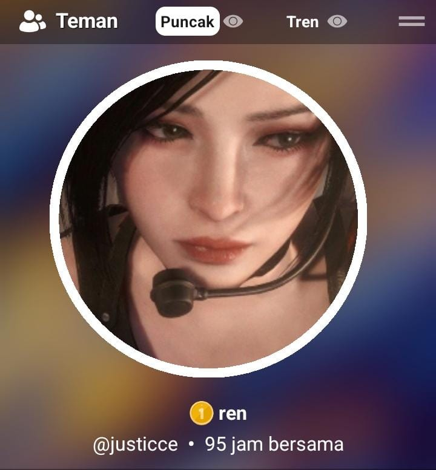

hi, baby!! happy our 2nd month
Masukkan PIN untuk masuk
Unlock
myles.
online, tapi malas bales.
Send
where everything began
tap to replay our first convo
Start
Happy Mensive, i still fall from you, even in the smallest moments.💙

our little ravee nights
9000 bbc and beyond
when i realized i like you
if i could pause time
thank you, always
still, its you where i belongg to
Enter PIN
Open
Cancel
Letter
Back